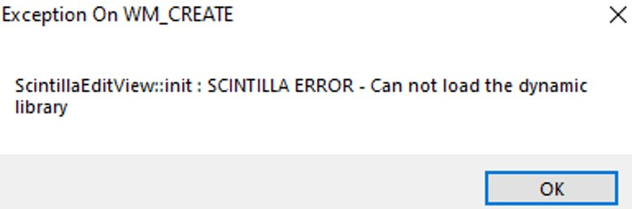
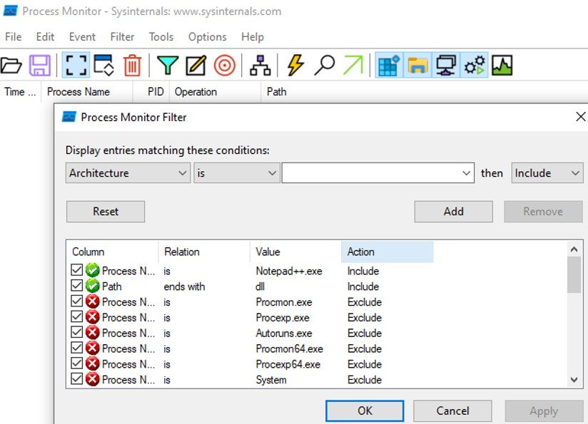
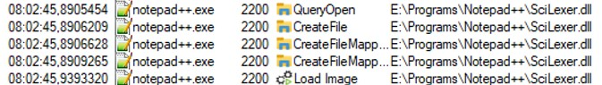
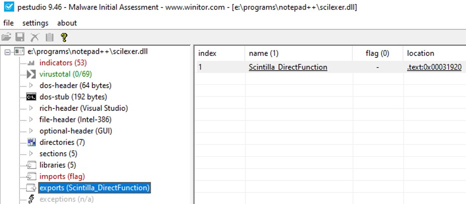
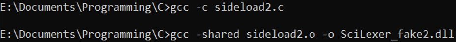
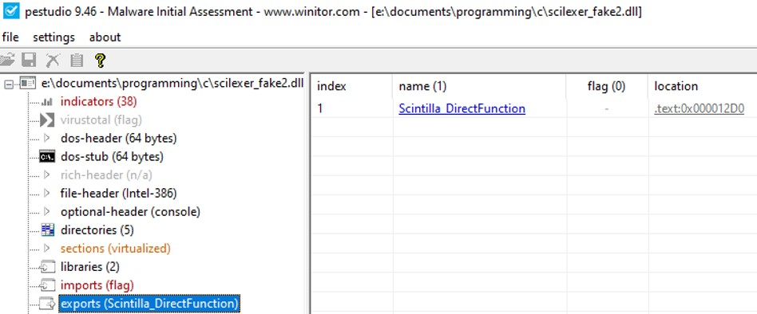
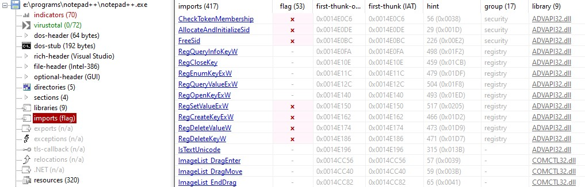
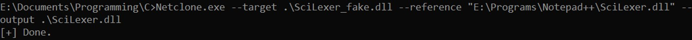

DLL sideloading is a technique that attackers use to trick a legitimate application to load a malicious DLL. Many applications are calling a .dll to use some functions that are exported by those .dll. This method is become more popular among the attackers since it can bypass many AV/EDR detections. I will demonstrate a DLL Sideloading by exploiting the vulnerability in all the version of Notepad++ prior 7.6.
It's a classic one, the CIA has determined that the notepad++ version prior 7.6 were vulnerable to a DLL Sideloading. Let's take the version 6.66 as an example.
NotePad++ version 6.66
First thing we can do to find any vulnerability on a application is to copy the binary to another folder and see if can run it. In this case, we are facing an error "Exception on WM_CREATE"

The error indicates that the program could not load a specific function and display this error. Let's open Process Monitor from Sysinternals to monitor what dynamic library notepad++ is calling when it is run on the system.
We want to look for every .dll that is loading by Notepad++, we can set some filter option to display the results that we want.


Notepad++ seems to load a specific dll called "SciLexer.dll", if we look at the previous error, the error indicates that it couldn't load a the dynamic library to call the function ScintillaEditView::init.
Let's take a look at what the function are exported in the DLL file "Scilexer.dll".
Open PEStudio and load the dll.

Only one function is exported in the SciLexer.dll, which means that the program need to call the function "Scintilla_DirectFunction". Let's create a .dll that is calling paint.exe. In C, C++, the function DllMain() is the entrypoint into a dynamic-link library, it is very similar as the function Main(). When the system starts or terminate a process it calls the entry-point function for each loaded DLL. Therefore, putting the function WinExec() will run this function when a process is calling this dll. WinExec() is used to execute the content of his argument.
When compiling for a Windows environment, use i686-w64-mingw32-gcc for 32 bits and x86_64-w64-mingw32-gcc for 64 bits
As I previously mentioned, the main reason for an application to load a dll is to import some functions from this dll instead of rewriting the function in the program code.
We have previously checked the export functions of the legitimate SciLexer.dll, and the file was only exporting one function called "Scntilla_DirectFunction". There might be a chance that if our dll does not contain this function, the program will also not run properly.
Compile the source code and generate a dll.

If I open PEStudio and check for the export, we should be able to see the function in the exports.

For this case, we only have 1 function, however, if we have many functions to copy, it will become troublesome to rewrite each function on our dll. Moreover, some dll sideloading needs the malicious dll to have exactly the same function definition.
To know what functions are called by the program, check the imports on PEStudio.

It exists a tool called "NetClone" that can clone the exports from one DLL to another.

Our new dll called "SciLexer.dll" has all the functions of the legitimate one. Now let's try to run Notepad++.exe.
In this example, notepad++.exe has opened paint.exe but it could lead to a more critical arbitrary code execution and the attacker could have had a reverse shell for example from this legitimate program. We have seen an increase in the use of this methods by the attackers and some have found dll sideloading vulnerabilities on native Windows applications such as OneDrive and Teams.